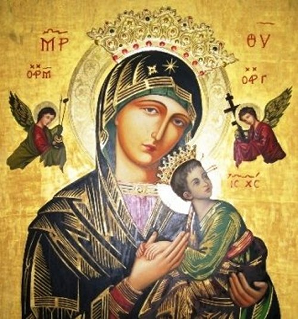

espírito ao nosso CRIADOR.”
espírito ao nosso CRIADOR.”“SUAS OBRAS”
As obras de Frei Boaventura, de acordo com o “Collegio di San Bonaventura", são compostas por um Comentário sobre as Sentenças de Pedro Lombardo, em 4 volumes, dentre os quais há um Comentário sobre o Evangelho de São Lucas e diversas outras obras menores. As mais famosas destas são "Itinerarium Mentis in Deum", "Breviloquium", "De Reductione Artium ad Theologiam"; "Soliloquium" e "De septem itineribus aeternitatis", nas quais se encontram as mais preciosas características de sua doutrina. Foi para Santa Isabel, irmã do "Rei da França", São Luis IX, e o seu Mosteiro de Clarissas em Longchamps, que Boaventura escreveu o seu tratado "Sobre a Perfeição da Vida".
O "Comentário sobre as Sentenças" ainda é, a obra-prima de Boaventura. Ela foi escrita por ordem de seus superiores quando ele tinha apenas 27 anos de idade e é uma obra teológica de grande qualidade.
Originalmente Frei Boaventura escreveu em Latim o seu “SALTÉRIO À VIRGEM MARIA”. Foi posteriormente traduzido em diversos idiomas, inclusive em português
Com esta pequena Obra, Frei Boaventura procurou evidenciar sua devoção, e o reconhecimento sobre MARIA, NOSSA SENHORA, na OBRA SALVÍFICA DE DEUS. Aqui no Brasil, a Editora Ave-Maria fez a tradução desta Obra, escrita no século XIII e foi impressa pela primeira vez em 1554, com o título: “Psalterium Sanctae Mariae Virginum”.
São 150 Salmos que ampliarão o nosso conhecimento, evidenciando e louvando a MÃE DE DEUS. E com eles, poderemos utilizar em nossas orações, cantando ou rezando o nosso amor a SANTÍSSIMA VIRGEM MARIA. No final de cada SALMO, São Boaventura recomenda rezar: uma AVE-MARIA; GLÓRIA ao PAI, ao FILHO e ao ESPÍRITO SANTO; e a JACULATÓRIA: “Doce CORAÇÃO DE MARIA, sede nossa Salvação.”
Aqui, citamos apenas “retalhos, ou seja, frases de alguns Salmos", para conhecimento dos leitores.
=SALMOS=
Salmo 1 – “Abençoado é o ser humano, ó VIRGEM MARIA, que ama TEU Nome, pois TUA Graça dará conforto à sua alma. Ele será refrescado como por fontes de água pura. TU produzirás nele os frutos da justiça. Por TUA beleza és superior a todas as mulheres; pela excelência de TUA Santidade ÉS Superior a todos os Anjos e Arcanjos.”
Salmo 2 – “Venham até ELA todos que trabalham e estão com problemas, e ELA refrescará a alma de cada um. Aproximem-se DELA quando se sentirem tentados, porque a serenidade de SUA Face lhes trará paz e confiança.”
Salmo 3 - “Tem piedade de mim, ó SENHORA, e cura minha doença. Tira
a angústia e a dor de meu coração. Guia-me no caminho da salvação e entrega meu
espírito ao nosso CRIADOR.”
Salmo 9 – “Que os pecadores encontrem a Graça de DEUS por meio de TI, que nos Derrama Graças e Salvação.”
Salmo 11–“Me Salva, ó MÃE do Santo Amor, Fonte de Clemência e Doçura de Piedade”.
Salmo 13– “Virgem MÃE DE DEUS, ELE, que o mundo inteiro não consegue conter, ELE foi encerrado dentro de TI e SE fez HOMEM.”
Salmo 19– “Não TE ignores de nós no dia de nossa morte, mas ajuda nossa alma quando ela deixar o corpo. Apresenta-nos ao sereníssimo Juiz, que por TUA Graça ELE nos dê o perdão.”
Salmo 20– “De TEU Trono nos dá sabedoria, pois por meio dela seremos docemente iluminados na verdade.”
Salmo 28–“Ouve os gemidos dos que suspiram por TI e não desprezes as preces dos que invocam o TEU Nome.”
Salmo 30–“Nas TUAS Mãos, ó SENHORA, eu entrego meu espírito, toda a minha vida e meu último dia.”
Salmo 31– “Ó VIRGEM MARIA, TU és o caminho pelo qual a salvação desce do alto até nós.”
Salmo 40– “Abençoada MARIA, auxilia os necessitados e os pobres, aqueles que permanecem fiéis a TI. SENHORA dos Anjos, RAINHA do Mundo, purifica meu coração com o fogo do Amor e da TUA Caridade. TU és a MÃE da Iluminação do meu coração, TU és a Enfermeira que apazigua minha mente. Minha boca anseia por TE Louvar; minha mente, cheia de devoção, aspira a TE Venerar com ardente afeição. Minha alma anseia rezar a TI; todo o meu ser se entrega à TUA Guia e aos TEUS Ensinamentos.”
Salmo 46–“Que todas as Nações batam palmas e cantem em júbilo à Gloriosa VIRGEM. Pois ELA é a porta da Vida, a porta da Salvação e o Caminho da Reconciliação. ELA é a esperança dos penitentes e o conforto para aqueles que choram. ELA é a abençoada paz e a salvação dos corações. Tem misericórdia de mim, ó SENHORA, tem misericórdia de mim, pois TU és a Luz e a Esperança de todos que em TI Confiam.”
Salmo 50–“Tem misericórdia de mim, ó SENHORA, pois TU és chamada de “MÃE DE MISERICÓRDIA”. E, de acordo com TUA Misericórdia, purifica-me de todas as minhas iniquidades. Derrama TUA Graça sobre mim e não afastes de mim a TUA Clemência. Pois eu confessarei meus pecados e acusarei a mim mesmo de todos os crimes diante de TI. Reconcilia-me com o Fruto de TEU VENTRE e aproxima de mim AQUELE que me criou.”
Salmo 54–“Ouve minhas preces, ó SENHORA, e não desprezes minhas súplicas. Tornei-me triste em meus pensamentos, pois o julgamento de DEUS me atemoriza. A sombra da morte me tomou, e o medo do inferno me invadiu. Mas em solidão eu espero TEU consolo; em meus aposentos esperarei por TUA Misericórdia.”
Salmo 61–“Ó SENHORA, que minha alma esteja sujeita a TI, TU que
deste à luz o nosso SALVADOR. Lembra-TE de nós, ó intercessora dos perdidos. Escuta
o 
Salmo 77–“Atendam, ó Povo de DEUS, os Mandamentos Divinos e não se esqueçam da RAINHA DA GRAÇA. Abram seus corações para buscá-LA e com seus lábios glorifiquem-NA. Deixem que o AMOR DELA desça até os seus corações e queiram sempre agradá-LA.”
Salmo 78–“Derrama sobre mim a doçura de TUAS GRAÇAS, assim como a fragrância de TEUS Dons Celestes.”
Salmo 80–“Regozijem na SENHORA, Nossa Auxiliadora, e cantem a alegria de seus corações. Deixem suas afeições pulsarem NELA, e ELA confundirá os seus inimigos. Imitemos SUA humildade, obediência e modéstia. Corram para ELA com Devoção Sagrada, e ELA dividirá todas as coisas boas com vocês.”
Salmo 82–“Fere meu coração com TUA Caridade, torna-me merecedor de TUA Graça e de TEUS Dons. Que meu coração se derreta com medo de TE perder, e que meu desejo por TI aqueça a minha alma.”
Salmo 85–“Conhecer-TE e aprender CONTIGO é a raiz da imortalidade; declarar TUAS Virtudes é o caminho da Salvação.”
Salmo 86–“O fundamento da vida na alma do justo é perseverar na caridade até o fim. TUA Graça levanta o homem empobrecido na adversidade, e a invocação do TEU NOME inspira confiança.”
Salmo 97–“Cantem a NOSSA SENHORA uma nova canção, pois ELA fez coisas maravilhosas. À vista de todas as nações, ELA revelou SUA misericórdia; SEU NOME é ouvido mesmo nos confins da Terra. Lembra-TE, ó SENHORA, dos pobres e dos desvalidos e suporta-os com a ajuda de TEU frescor Sagrado. Pois TU és, ó SENHORA, doce e verdadeira, paciente e cheia de compaixão. Caminha sobre os inimigos de nossas almas e esmaga-os com TEU Sagrado BRAÇO.”
Salmo 100–“Para TI, ó SENHORA, cantarei a misericórdia e o julgamento, cantarei para TI com o coração alegre quando fizeres minha alma satisfeita. Louvarei a TI e TUA Glória, e TU refrescareis a minha alma.”
Salmo 102–“Que minha alma seja abençoada pela MÃE de JESUS CRISTO e que tudo que há dentro de mim glorifique o SEU NOME. Que eu nunca me esqueça dos benefícios da SENHORA nem de SUA GRAÇA e Consolação. Pois por SUA GRAÇA os pecados são perdoados, e por SUA Misericórdia as doenças são curadas.
Salmo 108– “Ó SENHORA, não desprezes meu louvor; digna-TE a aceitar
este Saltério dedicado a TI. Olha pela vontade de meu coração e faz com que
minhas afeições sejam agradáveis a TI. Apressa-TE a visitar teus servos; para
que sob a proteção da TUA MÃO eles não sofram injúrias. Que através de TI, eles
possam também receber a iluminação do ESPÍRITO SANTO e não serem atingidos pelo
calor da cobiça. Cure, ó SENHORA, aquele que tem o coração contrito e revive-o
com o ungüento de TUA Piedade.”
afeições sejam agradáveis a TI. Apressa-TE a visitar teus servos; para
que sob a proteção da TUA MÃO eles não sofram injúrias. Que através de TI, eles
possam também receber a iluminação do ESPÍRITO SANTO e não serem atingidos pelo
calor da cobiça. Cure, ó SENHORA, aquele que tem o coração contrito e revive-o
com o ungüento de TUA Piedade.”
Salmo 114–“Amo a MÃE DO SENHOR, meu DEUS, e a Luz da SUA Compaixão brilha sobre mim. O sofrimento da morte me envolveu, mas a Visitação de MARIA me renovou. Tenho passado sofrimentos e perigos e sempre renasci por SUA Graça. Que SEU NOME e SUA Lembrança estejam sempre em nossos corações, e o sopro do maligno jamais nos afligirá.”
Salmo 123–“O perigo nos haveria de ter tomado, caso NOSSA SENHORA não estivesse entre nós. Ó VIRGEM, seja nossa permanente defensora e propícia advogada diante de DEUS. Mostra-nos, ó SENHORA, TUA Misericórdia e nos fortalece em TEU SANTO Serviço.
Salmo 124–“Regozije e exultem, vocês que A Amam, pois ELA os ajudará nos dias de sua tribulação.”
Salmo 133–“Que todos que esperam em TEU SANTO NOME sejam abençoados por TI, ó SENHORA. Regozijem com grande alegria, todos vocês que glorificam a SENHORA, pois serão beneficiados pela plenitude de SUA Consolação.”
Salmo 141–“Com minha voz tenho clamado por NOSSA SENHORA, tenho humildemente implorado a ELA. Tenho derramado copiosas lágrimas diante dos OLHOS DELA, a SENHORA, a Quem entrego os meus lamentos.”
Salmo 144–“A TI exaltarei, ó MÃE DO FILHO DE DEUS, e todo o dia eu cantarei os TEUS Louvores. Gerações de pessoas louvarão o TEU Trabalho, e toda a Terra espera TUA Misericórdia.”
Salmo 150–“Louvem NOSSA SENHORA mediante seus Santos, em SUAS Virtudes e Milagres. Louvem-NA, vocês, Apóstolos: louvem-NA, vocês, coros de Patriarcas e Profetas. Louvem-NA, vocês, exércitos de Mártires; louvem-NA, vocês todos, Doutores e Confessores. Louvem-NA, vocês, Virgens e Castas; louvem-NA, Ordens de Monges e Santos Ascetas. Louvem-NA nos Monastérios de todas as religiões; louvem-NA todas as almas de todos os Habitantes Celestiais. Que todos os Espíritos e Seres louvem NOSSA SENHORA!”